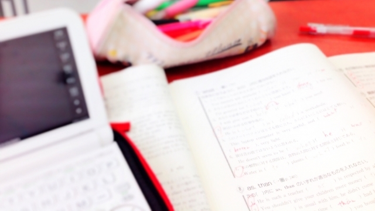

ＧＷも終わり、いよいよ高校生は本格的な日常生活が始まる今日この頃。皆様いかがお過ごしでしょうか。
この時期保護者・生徒問わずよく尋ねられる質問が「電子辞書の使用」について。最近では電子辞書の値段も下がり、中学時代から持っている生徒も少なくないため、一時期に比べれば少なくなったものの、まだまだ聞かれることが多いですね。
私の意見はずばり、使用大賛成。これは多分に自分の実体験が根拠に含まれているため、論理的ではないかもしれませんが、とにかく賛成なのです。
今でこそ世界史と現代文を専門にしていますが、学生時代に私が最も得意だった教科は英語でした。全国模試でも上位の成績を取ったこともありますし、一時は本気で語学を専門にしようと考えていたほどです。こう書くと少し自慢めいてしまいますが、そんなことはありません。なにせ高校2年生の秋まで（つまり、英語を習い始める中1から5年間ずっと）英語は最も苦手な教科だったのです。どれくらいできなかったかというと、高2の段階で「umbrella」のスペルも覚えておらず、受動態も現在完了もぼろぼろ。学校の先生にはあきらめられ、定期テストはいつも後ろから数えて一桁という、とんでもない苦手っぷり。英語があまりにもできなかったために高2の段階では大学進学自体が危ぶまれるほどでした。
そんな自分に転機が訪れたのは高2の秋。忘れもしない、秋葉原の電気屋さんで電子辞書を買ったのです。当時はまだ電子辞書は全く一般的ではなく、値段もかなり高価だった記憶があります。にもかかわらず、こつこつ貯めたお小遣いをすべてはたいて電子辞書を買ったのは、たぶん父親に対する反発があったのでしょう。
私の父は翻訳を生業としており、語学の学習には一家言持っています。曰く、「紙の辞書でないと生きた知識にならない」「一覧性が大切」「自分が子供の頃は、バラバラになるくらい頻繁に辞書を引いた」などなど。論理的な説明から精神論までいろいろと言われてきました。中１の頃はそんなものかと素直に受け入れていた私も、中3くらいになると反骨心が芽生えてきます。重たくて引くのが面倒くさい辞書は、いつしかうるさい父親の象徴となり、学校のロッカーに放り込んだまま全く使わなくなりました。すると当然単語を覚えなくなります。単語を覚えなければいくら文法が分かっても文章が読めません。文章が読めなければ英語はますますつまらなくなります。そんな負のスパイラルを順調に進んで、最終的に落ちるところまで落ちたのです。
そんなわけで、父親へのよく分からない反抗心から破れかぶれに買った辞書ですが、それがまさに自分の人生を大きく変えてくれました。（父親に内緒で）使い始めてみると、もう目から鱗。とにかく軽くて小さい。そして、引くのが楽！ 新しいガジェットをいじる楽しさと相まって、目につく英単語を片っ端から調べ始めます。するとこれまで意味がよく分からなかった英文が読める。さらに、単語単体をとってみても、一つの単語に正反対の意味がある言葉があったり、無意味に長いスペルの単語があったりと、発見がいっぱい。こうなると勉強をしているという意識すらなくなります。電子辞書をいじくり回したいがためにあえて難しい英文を読むという不思議なことをやり始め、気がつくと模試の偏差値が勝手に20以上上がり、おかげで大学にもなんとか合格できました。
紙が持つ優れた一覧性や、紙を繰ることで生まれる体感など、紙の辞書の利点は大人になった今ではとてもよく分かります。しかし、その重さや面倒くささを考えると、電子辞書の利点が圧倒的に勝っているように思うのです。
知識量よりも思考力が重視される今日この頃ですが、知識はあって損をするものではありません。知識の組み合わせを思考と呼ぶならば、知識の量の多さは思考のバリエーションの多さです。正直なところ、特に文系の学問においては、やはり知識量はとても重要です。そして、知識量を増やすためにはその知識への「アクセス」を簡単にするのが最も手っ取り早いと思うのです。インターネットが発展した昨今では、「google」や「wikipedia」を学生が使用しすぎることの弊害もささやかれていますが、出典の不確かさ、不正確さと引き替えに得られる膨大な情報への簡単なアクセスは、やはり魅力的です。
電子辞書を使って分からない単語を調べること、wikipediaを使って調べ学習をすること。どちらも賛否両論ですが、私は明確に賛成です。原理原則にこだわった結果、調べること自体を放棄してしまうのであれば、それはとてももったいないことですから。
そんなわけで、お子さんに電子辞書をねだられている保護者の方は、是非数万円の投資をしてあげてくださいね。大丈夫です。「手で辞書を引かなければ覚えない」は迷信です！